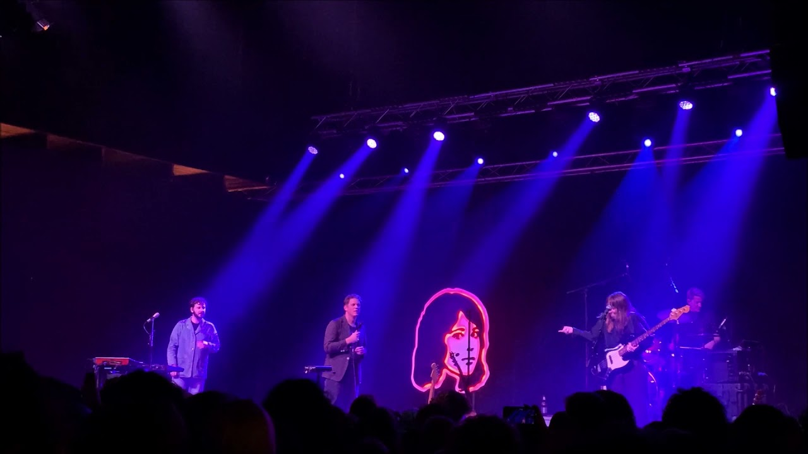

cigarettes out the window
 Spotify
Spotify
Letra
My girl Liddy used to always smoke Cigarettes when she couldn't sleep She'd disappear for an hour and a half And when she'd come back she'd brush her teeth
But I could still smell it on her raggedy tee And I could taste it on her lips when we kiss Poor little Liddy used to always quit But she never really quit She'd just say she did
Cigarettes, cigarettes out the window (oh-oh) Cigarettes, cigarettes out the window (oh-oh) Cigarettes, cigarettes out the window (oh-oh) Cigarettes, cigarettes out the window (oh-oh)
My girl Liddy used to always smoke Cigarettes when she couldn't sleep I wonder what she did when she got done I guess she'd just flick them out in the street
Poor little Liddy, she wishes it was dark But it's never really dark in L.A. The light from the billboard always shines But it changed twelve times since you went away
Cigarettes, cigarettes out the window (oh-oh) Cigarettes, cigarettes out the window (oh-oh) Cigarettes, cigarettes out the window (oh-oh) Cigarettes, cigarettes out the window (oh-oh)
We'll find moonlit nights strangely empty Because when you call my name through them There will be no answer Rather melodramatic, aren't you? We'll find moonlit nights strangely empty Because when you call my name through them There will be no answer You mind if I smoke?
We'll find moonlit nights strangely empty Because when you call my name through them There will be no answer I always smoke in the theater We'll find moonlit nights strangely empty Because when you call my name through them There'll be no answer Somehow it enhances the performance